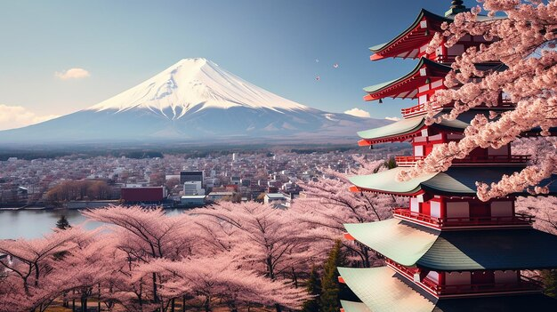
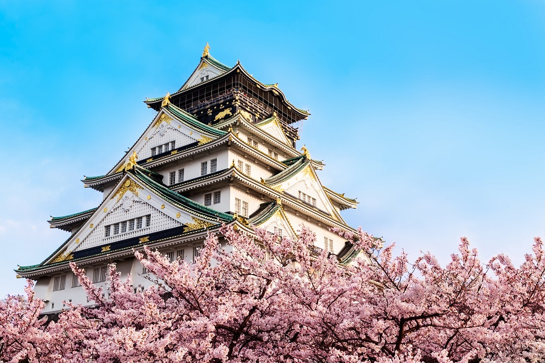
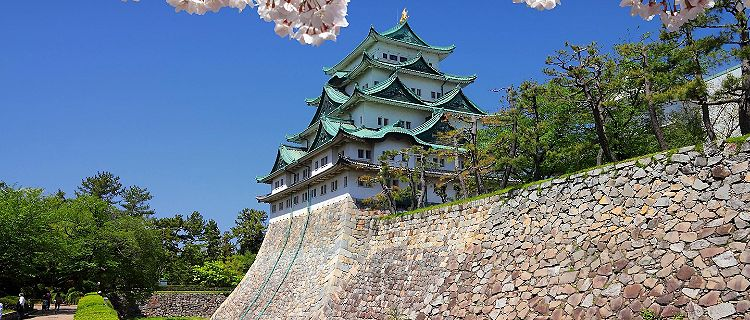

Lugares para visitar:
- Tokio
 Kioto
Kioto- Osaka
- Nagoya
Itinerario:
En 5 dias y 4 noches en tokio se puede subir el monte Fuji, visitar shibuya, conocer el lago Ashi, ir al templo de Asakusa, subir la torre de tokio, visitar el palacio imperial de tokio, ir a la ciudad de Akihabara, recorrer el santuario de Meji, visitar el monte quinta estacion de Fuji, ver el tokio skytree, visitar la ciudad de Ginza, subir al teleferico de Hakone, conocer los jardines de Hama Rikyu, visitar Harajuku, deleitarse con su gastronia y compras.
Costos de viaje:
- Hotel estadia completa -> $380
- Comidas externas por dia -> $40
- Traslados por dia -> $10
- Ingresos y actividades -> $90
- Costos adicionales -> $100